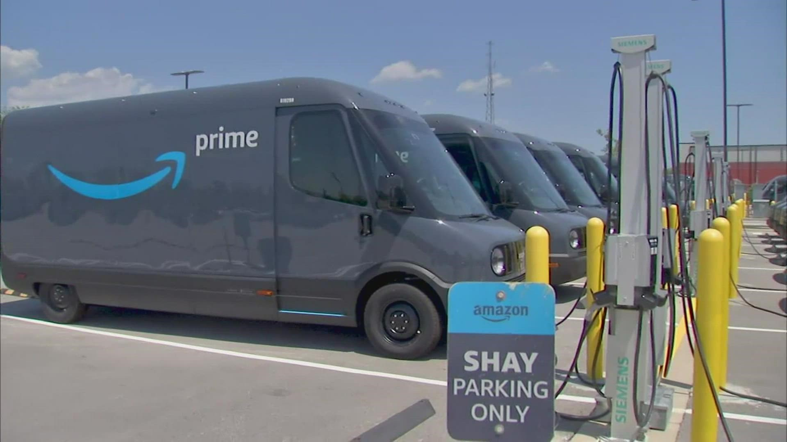
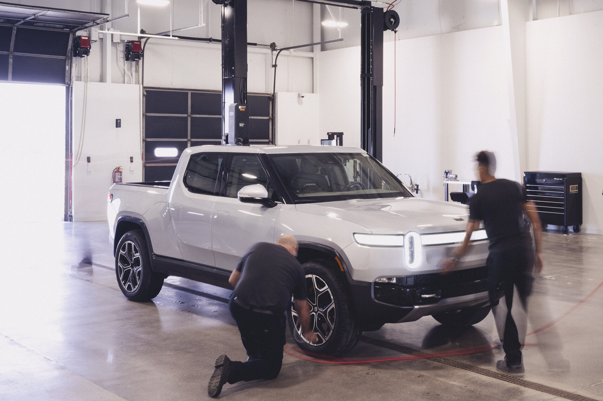
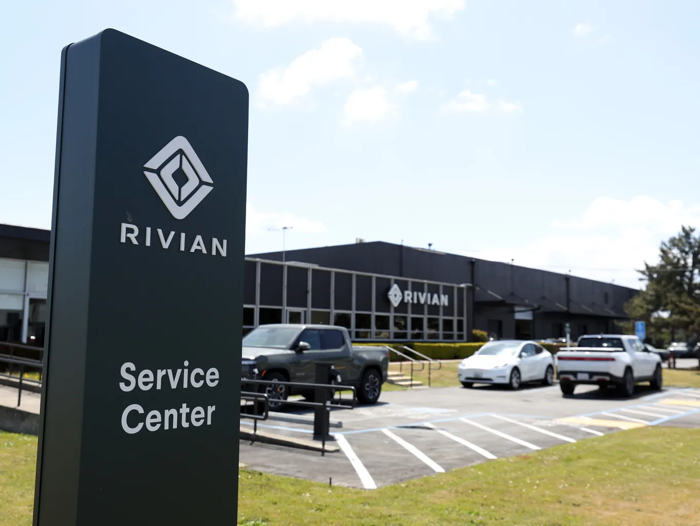

Summary
Rivian is an automotive maker manufacturing electric pickup trucks (R1T), SUVs (R1S), and commercial vans. The company believes electrification of combustion engines is one of the most efficient ways to reduce carbon footprints and keep the planet green for the next generation.
Fleet OS

Fleet OS is a Rivian Fleet management software for commercial electric vehicles. Fleet OS enables fleet managers to operate a safe, cost-effective fleet with ease. It provides tools and dashboards to administer vehicle health, performance, service, charging, and utilization of fleets.
I've been providing longitudinal UX research efforts along the product roadmap. I joined the team at the early stage of the product design and introduced a research framework for Fleet OS Amazon deployment.

Fleet OS has been deployed to Amazon test site in August 2022. As the product gets the end users on board for the first time, the team is working on product enhancement to enhance quality of experience.
Rivian Service Vehicle

Rivian Service Vehicle (RSV) is a commercial van that will be used for mobile auto repair service. The average RSV will travel approximately 140 miles every day. The first end users will be Rivian local service centers in North America.

I've been actively participating RSV infotainment system design by leading research-driven crossfunctional collaboration. The team is currently exploring phone call/text messaging automation via RSV and communication support via RSV infotainment screen.
Fleet OS
Fleet OS is a Rivian Fleet management software for commercial electric vehicles. Fleet OS enables fleet managers to operate a safe, cost-effective fleet with ease. It provides tools and dashboards to administer vehicle health, performance, service, charging, and utilization of fleets.
I've been providing longitudinal UX research efforts along the product roadmap. I joined the team at the early stage of the product design and introduced a research framework for Fleet OS Amazon deployment.
Fleet OS has been deployed to Amazon test site in August 2022. As the product gets the end users on board for the first time, the team is working on product enhancement to enhance quality of experience.
Rivian Service Vehicle
Rivian Service Vehicle (RSV) is a commercial van that will be used for mobile auto repair service. The average RSV will travel approximately 140 miles every day. The first end users will be Rivian local service centers in North America.
I've been actively participating RSV infotainment system design by leading research-driven crossfunctional collaboration. The team is currently exploring phone call/text messaging automation via RSV and communication support via RSV infotainment screen.
Methods
- Qualitative: Jobs to be Done Workshop, Contextual Inquery, In-person/remote Interview, Heuristic Evaluation, Concept Testing
- Quantitative: Survey